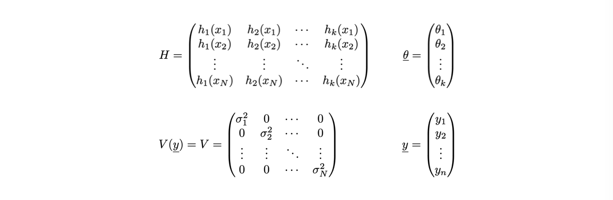
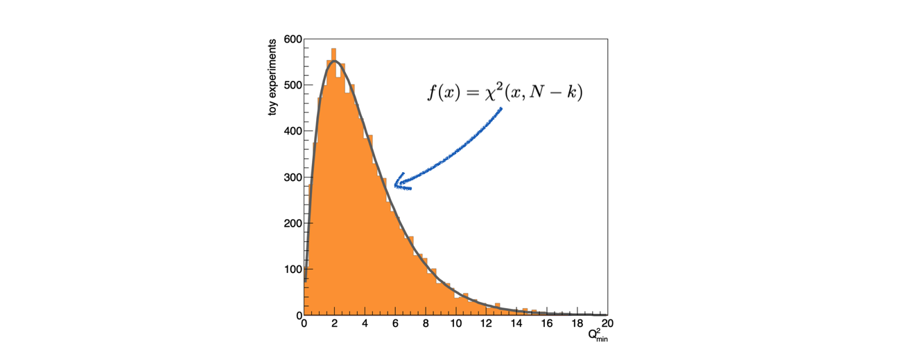

Lezione 10: stima di parametri con il metodo dei minimi quadrati¶
10.1 Introduzione¶
Il metodo dei minimi quadrati si basa su un principio indipendente rispetto a quello della massima verosimiglianza
Si scelgono i parametri θ che rendono minima la distanza fra il modello ed i dati, secondo una metrica definita dagli scarti quadratici medi

10.1.1 Un esempio immediato¶
Per determinare la media μ di un insieme di misure xi si può minimizzare la funzione:
10.1.2 Il caso y=g(x)¶
La stessa metrica viene spesso utilizzata per fare regressioni sui dati, chiamata anche fit
Siano date N coppie di misure indipendenti del tipo (xi, yi ), per le quali:
l’incertezza sul valore xi sia nulla o trascuarbile
l’incertezza sul valore yi sia σi
Sia data l’ipotesi che le due variabili xi e yi siano in relazione fra loro secondo una funzione g tale per cui y=g(x,θ)
Si definisce la funzione Q2(θ) come:
10.1.3 La determinazione dei parametri θ¶
In questo caso, i parametri θ (θ può essere un vettore) si determinano trovando il minimo della funzione Q(θ):
esistono diverse tecniche numeriche per trovare il minimo della funzione
10.1.4 Le proprietà del metodo¶
Se gli scarti εi di yi rispetto a g(xi,θ) hanno valore di aspettazione nullo e varianza finita e fissa, cioè non dipendente da y, allora
il metodo dei minimi quadrati è uno stimatore non distorto dei parametri θ
ed ha la varianza minima fra tutti gli stimatori non distorti lineari (in y), indipendentemente dalla distribuzione di probabilità degli scarti
Se gli scarti εi sono distribuiti secondo una distribuzione di probabilità Gaussiana, il minimo della funzione Q2(θ) è distribuito secondo una distribuzione di probabilià Χ2 con N-k gradi di libertà,
dove N è il numero di coppie (xi, yi ) e k il numero di parametri stimati con i minimi quadrati
10.2 Il caso lineare¶
Nel caso in cui la funzione g(x) sia lineare nei parametri θ, le equazioni di minimizzazione possono essere risolte analiticamente
Un esempio di funzione lineare è la retta g(x,θ) = θ1 + θ2 x:
h1(x) = 1
h2(x) = x
Un altro esempio di funzione lineare è una parabola g(x,θ) = θ1 + θ2 x + θ3 x2:
h1(x) = 1
h2(x) = x
h3(x) = x2
10.2.1 La formulazione matriciale¶
Nel caso generale, le N coppie di misure (xi, yi ) e k parametri θj si possono rappresentare in forma vettoriale
Per comodità di scrittura, la determinazione del minimo della funzione Q2(θ) viene svolta in forma matriciale
10.2.2 Le espressioni dei singoli elementi¶
Gli ingredienti necessari per la deteminazione dei parametri θj sono i seguenti: 
Dove V è la matrice di covarianza delle misure yi, che è diagonale perché le misure sono indipendenti fra loro
10.2.3 Il valore dei parametri e della loro incertezza¶
Il risultato delle operazioni di minimizzazione è il seguente:
V-1 indica l’inversa della matrice di covarianza delle misure yi
tH indica la trasposta della matrice H
La notazione che indica il risultato dell’algoritmo dei minimi quadrati con un accento circonflesso sulla lettera θ sottolinea il fatto che si tratta del risultato di una stima
10.3 Un esempio: il fit di una retta¶
L’implementazione di una regressione di un modello g(x,θ) = θ1 + θ2 x in
C++è un utile esercizio di programmazione e comprensione della statistica… ricordando che esistono librerie per l’analisi dati (come
ROOT) con già implementati questi algoritmistrumenti più generici: implementano il metodo dei minimi quadrati sia per un modello lineare generico che per modelli non lineari
strumenti più efficaci: implementano algoritmi di minimizzazione tipicamente più potenti di quelli che possiamo scrivere in una lezione
10.3.1 L’algebra delle matrici¶
Assumiamo di avere a disposizione una semplice libreria per lo svolgimento di calcoli fra matrici, che potete trovare qui: algebra_2.h e algebra_2.cc (per scaricare o copiare il file sorgente conviene visualizzarlo in versione
Raw)Rispetto a quella scritta per esercizio nella Lezione 7, in questo caso non si utilizzano
templateperché risuta più comodo decidere a runtime la dimensione delle matrici
10.3.2 Gli strumenti a disposizione¶
Una classe
vettore:class vettore { public: vettore (int N) ; vettore (const std::vector<double> & v) ; vettore (const vettore & orig) ; vettore & operator = (const vettore & orig) ; ~vettore () ; void setCoord (int i, double val) ; double norm () const ; int N () const ; double at (int i) const ; void stampa () const ; double operator[] (int i) const ; vettore operator+ (const vettore & v) const ; vettore operator- (const vettore & v) const ; vettore operator* (double val) const ; double dot (const vettore & v) const ; private: double * m_elementi ; int m_N ; } ;
Una classe
matrice:class matrice { public: matrice (int R) ; matrice (int R, int C) ; matrice (const matrice & orig) ; matrice & operator= (const matrice & orig) ; ~matrice () ; void setCoord (int i, int j, double val) ; double at (int i, int j) const ; void stampa () const ; bool quadrata () const ; int rango () const ; int N_righe () const ; int N_colonne () const ; bool simmetrica () const ; void dimensioni () const ; matrice minore (int r, int c) const ; // complemento algebrico matrice inversa () const ; matrice trasposta () const ; double determinante () const ; void operator*= (double val) ; private: int index (int i, int j) const ; int m_R ; int m_C ; double * m_elementi ; } ;
operazioni fra i due tipi:
vettore operator* (const matrice & M, const vettore & v) ; matrice operator* (const matrice & M1, const matrice & M2) ;
10.3.3 La generazione dei punti da interpolare¶
Per svolgere l’esercizio, bisogna innanzitutto avere a disposizione una collezione di dati
Con un generatore di numeri pseudo-casuali, si possono generare valori degli scarti εi per ogni punto xi, tali per cui: yi = g(xi , θ) + εi
Assumendo una distribuzione Gaussiana per εi, centrata in
0e con σ scelta a piacere:double g (double x) { return 3.14 + 2 * x ; } // .... vector<double> asse_x ; vector<double> asse_y ; for (int i_point = 0 ; i_point < N_points ; ++i_point) { double epsilon = rand_TAC_gaus (sigma) ; asse_x.push_back (i_point) ; asse_y.push_back (g (i_point) + epsilon) ; }
In questo caso, la funzione
rand_TACè stata modificata, con una implementazione dedicata al problema
10.3.4 La preparazione di matrici e vettori¶
a partire dalle coppie di punti, si costruiscono:
la matrice H dei valori delle funzioni hj (x) per tutti i punti:
matrice H (Npoints, 2) ; for (int i_point = 0 ; i_point < N_points ; ++i_point) { H.setCoord (i_point, 0, 1) ; H.setCoord (i_point, 1, asse_x.at (i_point)) ; }
il vettore y (con un costruttore apposito che riceve in input uno
std::vector:vettore y (asse_y) ;
la matrice V di covarianza delle misure yi :
matrice V (Npoints) ; for (int i_point = 0 ; i_point < N_points ; ++i_point) V.setCoord (i_point, i_point, sigma * sigma) ;
assumendo nota
sigma
10.3.5 La stima dei parametri θ¶
I calcoli per la determinazione del vettore θ e della sua varianza sono svolte in sequenza, minimizzando il numero di singole operazioni:
matrice V_inv = V.inversa () ; matrice theta_v = (H.trasposta () * V_inv * H).inversa () ; vettore theta = (theta_v * (H.trasposta () * V_inv)) * y ;
L’inversione della matrice V è fatta una sola volta
La matrice di covarianza di θ, che entra anche nel calcolo del suo valore centrale, viene calcolata una sola volta
10.3.6 La stampa del risultato¶
Sapendo che i termini diagonali della matrice di covarianza corrispondono alle varianze dei vari θi , il risultato del fit è:
cout << "termine noto: " << theta.at (0) << " +- " << sqrt (theta_v.at (0, 0)) << endl ; cout << "pendenza: " << theta.at (1) << " +- " << sqrt (theta_v.at (1, 1)) << endl ;
10.4 Le proprietà statistiche degli stimatori¶
Per studiare le proprietà statistiche delle stime ottenute con lo stimatore dei minimi quadrati, si utilizza la tecnica dei toy montecarlo
Riprodurre molte volte (
N_toys) lo stesso fit fatto su un determinato numero di punti (N_point), ciascuno generato in modo pseudo-casualeLa procedura di fit viene quindi inserita in un ciclo aggiuntivo:
//loop over toys for (int i_toy = 0 ; i_toy < N_toys ; ++i_toy) { // generare il sample // trovare i parametri // riempire istogrammi e contatori } //loop over toys
10.4.1 Gli elementi del ciclo¶
Il ciclo è composto di tre fasi:
La generazione degli eventi, come è stato fatto in precedenza
Il calcolo del valore dei parametri, con lo stesso programma utilizzato in precedenza
Il riempimento di istogrammi e contatori per la determinazione delle proprietà delle stime ottenute
10.4.2 La distribuzione delle stime¶
Le proprietà dello stimatore dei minimi quadrati si verificano osservando la distribuzione di probabilità delle stime ottenute
Queste distribuzioni si determinano attraverso istogrammi, che vanno creati prima del ciclo sui toy experiment:
// istogrammi per il disegno dei risultati del fit TH1F h_a ("h_a", "termine noto", 100, 3.14 * (1. - 1. * sigma), 3.14 * (1. + 1. * sigma) ) ; TH1F h_b ("h_b", "coefficiente angolare", 100, 2. * (1. - 1. * sigma), 2. * (1. + 1. * sigma) ) ;
Gli istogrammi vanno poi riempiti nel ciclo:
//loop over toys for (int i_toy = 0 ; i_toy < N_toys ; ++i_toy) { // ... h_a.Fill (theta.at (0)) ; h_b.Fill (theta.at (1)) ; } //loop over toys
10.4.3 Il risultato ottenuto¶
Infine, gli istogrammi vanno visualizzati dopo il termine del ciclo:
TCanvas c1 ("c1", "", 800, 800) ; c1.SetRightMargin (0.15) ; h_a.SetFillColor (kOrange + 1) ; h_a.SetLineColor (kGray + 1) ; h_a.Draw ("hist") ; c1.Print ("parametro_a.png", "png") ; h_b.Draw ("hist") ; h_b.SetFillColor (kOrange + 1) ; h_b.SetLineColor (kGray + 1) ; c1.Print ("parametro_b.png", "png") ;
Ottenendo le seguenti distribuzioni:

10.4.4 La copertura dell’intervallo di confidenza¶
Oltre al valore centrale, per ogni parametro lo stimatore dei minimi quadrati produce anche una stima della sua varianza
Per verificare che l’intervallo θj ± σj abbia la copertura attesa del 68%, si contano i toy experiment per cui il valore vero è contenuto nell’intervallo:
int cont_a = 0 ; int cont_b = 0 ; //loop over toys for (int i_toy = 0 ; i_toy < N_toys ; ++i_toy) { //... if (fabs (theta.at (0) - 3.14) < sqrt (theta_v.at (0,0))) ++cont_a ; if (fabs (theta.at (1) - 2. ) < sqrt (theta_v.at (1,1))) ++cont_b ; } //loop over toys
10.4.5 Il risultato del test¶
Dividendo il numero di volte in cui il valore vero è contenuto nell’intervallo per il numero totale di toy experiment:
cout << "copertura parametro a: " << static_cast<double> (cont_a) / N_toys << endl ; cout << "copertura parametro b: " << static_cast<double> (cont_b) / N_toys << endl ;
Si ottiene il valore ricercato:
copertura parametro a: 0.6829 copertura parametro b: 0.68
10.4.6 La correlazione fra i parametri¶
Il metodo dei minimi quadrati produce la matrice di covarianza dei parametri stimati, che non è necessariamente diagonale
Questo significa che i parametri stimati possono essere correlati fra loro: se θj è maggiore del suo valore vero, può succedere che in media anche θk sia maggiore del proprio valore vero, o viceversa
I termini fuori diagonale della matrice di covarianza dei parametri indicano la correlazione fra i parametri
10.4.7 La visualizzazione della correlazione¶
Anche in questo caso, si sfruttano i toy experiment per visualizzare la correlazione, utilizzando un istogramma bi-dimensionale, che mostri cioè il numero di toy experiment in funzione di due variabili
La classe di
ROOTche si utilizza si chiamaTH2F:TH2F h_ab ("h_ab", "parametri", 50, 3.14 * (1. - 1. * sigma), 3.14 * (1. + 1. * sigma), 50, 2. * (1. - 1. * sigma), 2. * (1. + 1. * sigma) ) ; h_ab.GetXaxis ()->SetTitle ("termine noto") ; h_ab.GetYaxis ()->SetTitle ("coefficiente angolare") ; h_ab.SetStats (0) ;
come nel caso di un
TH1F, il costruttore prende in ingresso un nome ed un titoloessendoci due variabili fisiche, il numero di bin, minimo e massimo vanno indicati per ciascuna variabile
10.4.8 Il riempimento dell’istogramma¶
All’interno del ciclo sui toy experiment, l’istogramma bi-dimensionale va riempito con le due variabili:
//loop over toys for (int i_toy = 0 ; i_toy < N_toys ; ++i_toy) { //... h_ab.Fill (theta.at (0), theta.at (1)) ; } //loop over toys
Quindi, al termine del ciclo, disegnato su un oggetto di tipo
TCanvasTCanvas c1 ("c1", "", 800, 800) ; c1.SetRightMargin (0.15) ; h_ab.Draw ("colz") ; c1.Print ("parametri_2D.png", "png") ;
Diverse opzioni grafiche producono varie visualizzazioni, come descritto nella documentazione di
ROOT
10.5 Una parentesi utile: il salvataggio degli oggetti di ROOT¶
Un oggetto utilizzato per fare analisi dati in
ROOTtipicamente può essere salvato in un file binario di tipo.rootAnalogamente al salvataggio su file di testo, si utilizza una classe dedicata alla gestione del file: in questo caso,
TFile:#include "TFile.h" //... TFile f_out ("main_03.root", "recreate") ;
il primo argomento è il nome del file da salvare su disco
il secondo argomento è la modalità di apertura del file:
recreateapre il file in scrittura e ne cancella il contenuto, se il file è già esistente
10.5.1 La scrittura di un oggetto su un file¶
Dopo aver creto un oggetto di tipo
TFile, si possono scrivere al suo interno altri oggetti, utilizzando il metodoWritedegli oggetti stessi:#include "TFile.h" //... TH1F h_test ("h_test", "istogramma di test", 10, 0., 10) ; h_test.Fill (5.3) ; TFile f_out ("main_03.root", "recreate") ; h_test.Write () ; f_out.Close () ;
Al termine della scrittura, il file va chiuso
10.5.2 Come aprire un terminale di ROOT¶
Un file di tipo
.rootpuò essere letto dalla linea di comando diROOTPer aprire la linea di comando, si esegue da
SHELLil comandoroot:> root ------------------------------------------------------------------ | Welcome to ROOT 6.20/04 https://root.cern | | (c) 1995-2020, The ROOT Team; conception: R. Brun, F. Rademakers | | Built for macosx64 on Apr 01 2020, 08:28:48 | | From tags/v6-20-04@v6-20-04 | | Try '.help', '.demò, '.licensè, '.credits', '.quit'/'.q' | ------------------------------------------------------------------ root [0]
In questa linea di comando,
ROOTfornisce un interprete di istruzioniC++che possono essere inserite a manoEssendo interpretate, sono tipicamente molto più lente di un programma compilato
10.5.3 Come guardare dentro ad un file¶
Se il comando
rootviene seguito dal nome del file da aprire,ROOTcrea automaticamente il puntatore ad un oggetto ti dipoTFilecon nome_file0che punta al TFile stesso:root [0] Attaching file main_03.root as _file0... (TFile *) 0x7ffb3f44eb80 root [1]
A questo punto, è possibile operare sugli oggetti contenuti nel
TFile, come se fossero puntatori:root [1] _file0->ls () TFile** main_03.root TFile* main_03.root KEY: TH1F h_test;1 istogramma di test root [2] h_test->Draw () Info in <TCanvas::MakeDefCanvas>: created default TCanvas with name c1
10.6 La stima di una incertezza ignota¶
Se gli scarti εi sono distribuiti secondo una distribuzione di probabilità Gaussiana, il minimo della funzione Q2(θ) al variare di θ, Q2min, è distribuito secondo una distribuzione di probabilià Χ2 con N-k gradi di libertà,
dove N è il numero di coppie (xi, yi ) e k il numero di parametri stimati con i minimi quadrati
Il valore di Q2(θ)min è dato dal prodotto:
Che nel programma scritto finora si calcola a partire dalla informazioni già esistenti:
double Q2min = (y - H * theta).dot (V_inv * (y - H * theta)) ;
10.6.1 La distribuzione attesa di Q2min¶
Se la varianza dei singoli punti yi è nota, allora si può riempire un istogramma contenente i valori di Q2min per i toy experiment generati e confrontarla con la distribuzione di probabilià Χ2 dopo il termine del ciclo: 
10.6.2 Il calcolo della varianza di yi¶
Se la varianza delle misure yi è ignota, invece, si può portare a termine la stima di θ e della sua matrice di covarianza assumendo che la matrice di covarianza delle misure sia una identità
Ricordando che la media di una distribuzione di Χ2 è uguale al numero di gradi di libertà, se nel calcolo di Q2min manca il valore di σ2 si può ricavare con la formula:
Che, dati
N_toystoy experiment, si traduce in:TH1F h_scarti ("h_scarti", "scarti", 200, 0., 5 * N_points) ; //loop over toys for (int i_toy = 0 ; i_toy < N_toys ; ++i_toy) { // ... h_scarti.Fill (Q2min) ; } //loop over toys cout << "sigma = " << sqrt (h_scarti.GetMean () / (N_points - 2)) << endl ;
Questo calcolo della varianza vale anche per ogni singolo toy experiment